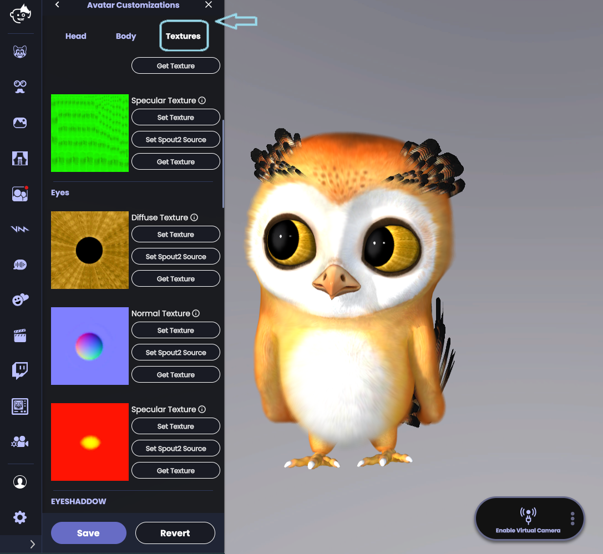
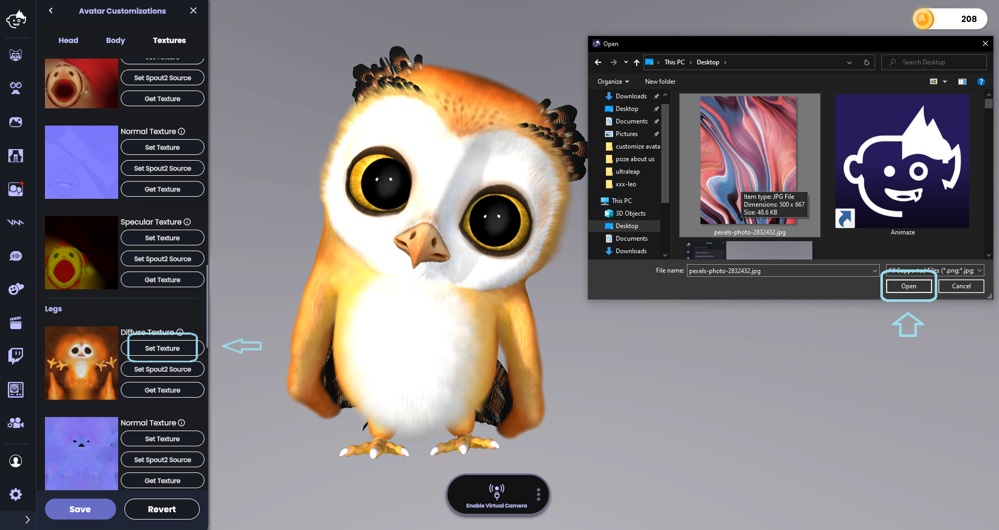
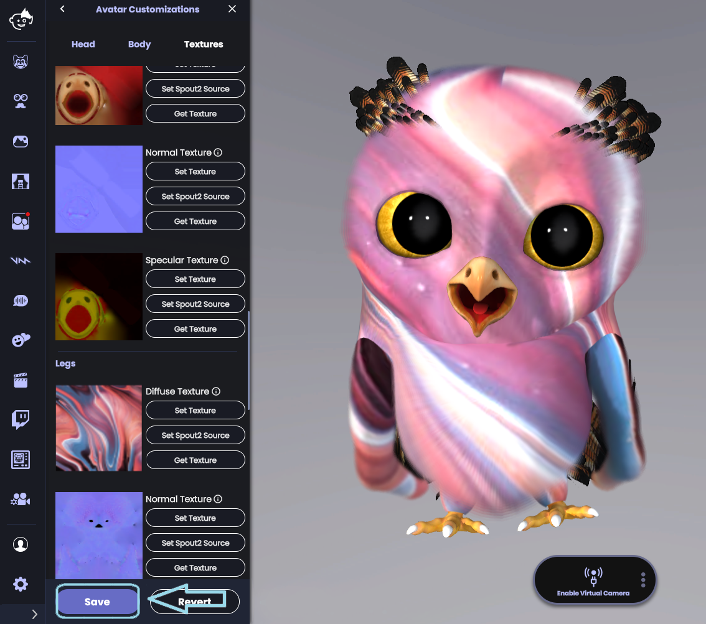

Animaze Desktop: How can I add a new texture to my avatar?
In the Customization drawer, navigate to the Textures tab.
The Textures tab will list all avatar textures that you can replace. The Diffuse Texture is the easiest and most visually impactful texture to use. If you want to embellish the existing Diffuse Texture in an editing program such as photoshop or paint, click “Get Texture” button to download the texture source files. Alternatively, you can find or create your own texture from scratch.

Replace the original texture with your updated texture image by clicking “Set Texture” button. You can replace a texture with any common image file format (e.g., .png, jpg). For best results, use a square image.
Select the textures from the folder on your computer.

Click save and enjoy your re-textured Avatar.

For more complex effects you can add Spout 2 sources on your model, for more details check our Spout 2 guide
Note: For most avatars, replacing the diffuse texture will have the most noticeable effect. Uploading a new diffuse texture will effectively re-skin your avatar. Experiment by uploading new textures to create your own one-of-a-kind avatar!
If you want to reset your avatar to its default look, click ‘Reset all Textures’. To learn about Diffuse and Normal textures, check out our technical documentation.